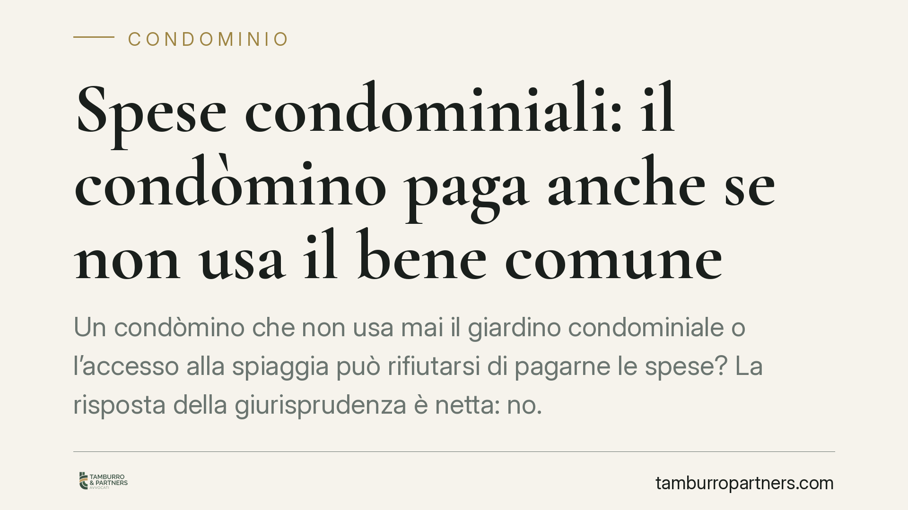

Spese condominiali: il condòmino paga anche se non usa il bene comune
Un condòmino che non usa mai il giardino condominiale o l'accesso alla spiaggia può rifiutarsi di pagarne le spese? La risposta della giurisprudenza è netta: no. Ciò che rileva è la facoltà d'uso, non l'uso effettivo. Per escludere un condòmino serve una clausola regolamentare specifica ed espressa, di natura contrattuale. Vediamo i presupposti e cosa fare in concreto.

Il fatto
La questione ricorrente è sempre la stessa: chi vive stabilmente altrove, o semplicemente non frequenta il giardino, la piscina o l'accesso alla spiaggia, ritiene ingiusto contribuire a spese di beni che non utilizza.
L'orientamento consolidato della Corte di Cassazione è chiaro: le spese relative ai beni comuni si ripartiscono secondo i millesimi di proprietà, a prescindere dall'uso concreto che ciascun condòmino ne faccia. Rileva la titolarità del diritto e la possibilità di servirsene, non la frequentazione effettiva.
Inquadramento normativo
La disciplina è contenuta nell'art. 1123 del codice civile, che distingue tre criteri di riparto.
Il primo comma stabilisce la regola generale: le spese per la conservazione e il godimento delle parti comuni sono sostenute da tutti i condòmini in misura proporzionale al valore della proprietà (i millesimi), salvo diversa convenzione.
Il secondo comma riguarda le cose destinate a servire i condòmini in misura diversa: qui la ripartizione avviene in proporzione all'uso che ciascuno può farne. Va sottolineato: la norma parla di uso *potenziale*, cioè della facoltà d'uso, non dell'uso materialmente esercitato. È questo il punto decisivo. Il condòmino paga perché ha il diritto di servirsi del bene, anche se sceglie di non farlo.
Il terzo comma disciplina i beni destinati a servire solo una parte dell'edificio (ad esempio una scala che serve un solo corpo di fabbrica): in questo caso le spese gravano unicamente sul gruppo di condòmini interessati.
Facoltà d'uso e uso effettivo
La distinzione tra facoltà d'uso e uso effettivo è il fulcro della materia. Chi non frequenta il giardino conserva comunque il diritto di accedervi; chi non scende in spiaggia mantiene il titolo per farlo. Poiché il diritto esiste, esiste l'obbligo di contribuzione.
L'unico modo per escludere legittimamente un condòmino dalle spese di un bene comune è una previsione specifica ed espressa contenuta nel regolamento di condominio o in una convenzione tra i partecipanti. Non basta una prassi tollerata o un accordo verbale.
È bene chiarire la natura di queste clausole. Le pattuizioni che derogano ai criteri legali di riparto — esonerando alcuni condòmini o modificando le proporzioni — hanno natura contrattuale. Per essere valide e opponibili a tutti devono essere approvate all'unanimità (regolamento contrattuale) e non con le maggioranze ordinarie assembleari. Una delibera che, a maggioranza, esoneri un condòmino dalle spese è affetta da nullità, perché incide su diritti individuali.
Implicazioni pratiche
Per il condòmino: il mancato utilizzo del bene non è un argomento spendibile per ridurre o azzerare la quota. Contestare l'addebito su questa sola base espone a soccombenza e alle relative spese.
Per l'amministratore: la ripartizione deve seguire le tabelle millesimali e i criteri dell'art. 1123 c.c. Applicare esoneri non previsti dal regolamento contrattuale, anche in buona fede, espone la gestione a impugnazioni.
Chi intende contestare una ripartizione può impugnare la delibera ai sensi dell'art. 1137 c.c., entro trenta giorni decorrenti dall'approvazione per i condòmini dissenzienti o astenuti presenti, e dalla comunicazione del verbale per gli assenti. Attenzione alla distinzione tra delibere annullabili (soggette al termine) e delibere nulle (impugnabili senza limiti di tempo), come quelle che ledono diritti individuali sui riparti.
Cosa fare in concreto
- Verificare il regolamento condominiale: controllare se contiene clausole espresse di esonero o di riparto derogatorio, e la loro natura (assembleare o contrattuale).
- Non confondere non uso e non pagamento: la scelta di non frequentare un bene comune non estingue l'obbligo contributivo.
- Per introdurre esoneri, agire sull'unanimità: qualsiasi deroga stabile ai criteri legali va formalizzata in una clausola contrattuale approvata da tutti i condòmini. È opportuno formalizzarla per iscritto.
- Rispettare i termini di impugnazione: chi ritiene illegittimo un riparto verifichi subito se la delibera è annullabile (30 giorni) o nulla, e agisca di conseguenza.
- Documentare le decisioni assembleari: verbali chiari sui criteri adottati riducono il contenzioso.
In sintesi
Il bene comune si paga in base ai millesimi e alla facoltà d'uso, non all'uso effettivo. L'esonero è possibile solo con una clausola espressa e di natura contrattuale. Prima di contestare o modificare un riparto, è essenziale distinguere tra ciò che l'assemblea può decidere a maggioranza e ciò che richiede il consenso di tutti.
---
*Contributo informativo a cura di Tamburro & Partners Avvocati – Avv. Giuseppe Tamburro. Non costituisce parere legale.*
Ogni condominio ha una storia a sé.
Se gestisci un'amministrazione e vuoi un confronto su una specifica questione condominiale, scrivi allo studio. Ti rispondiamo entro un giorno lavorativo.